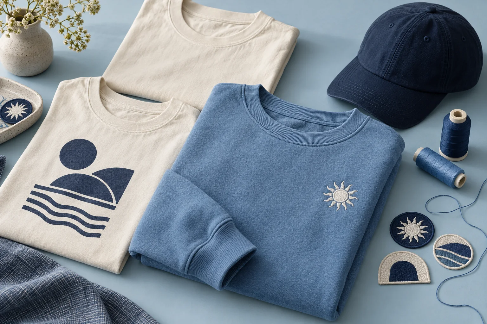
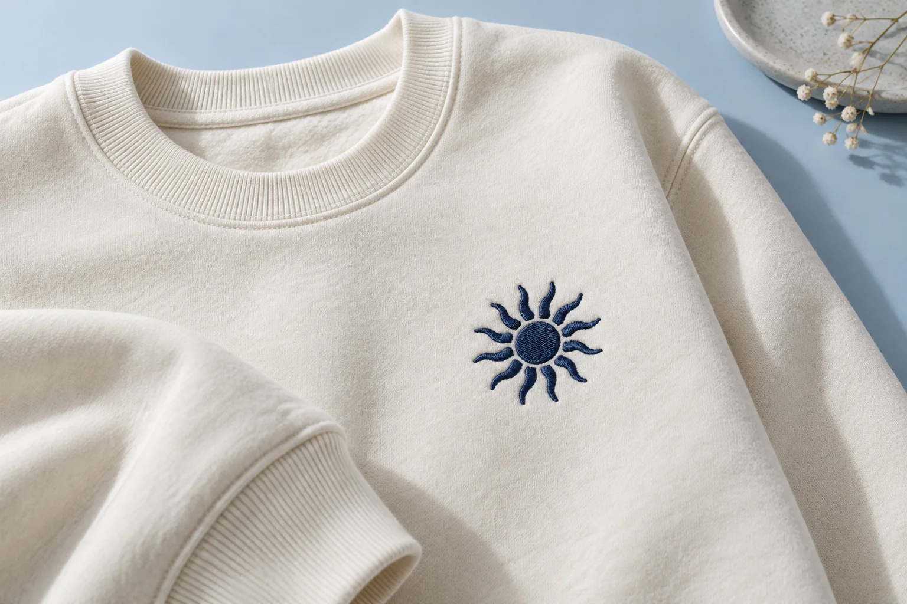
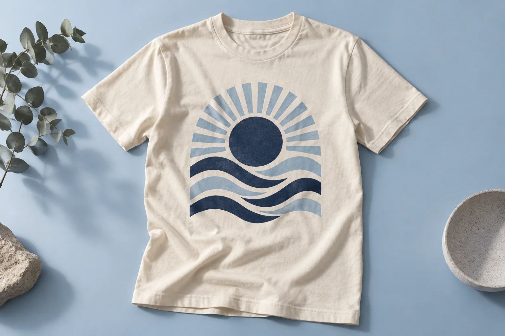
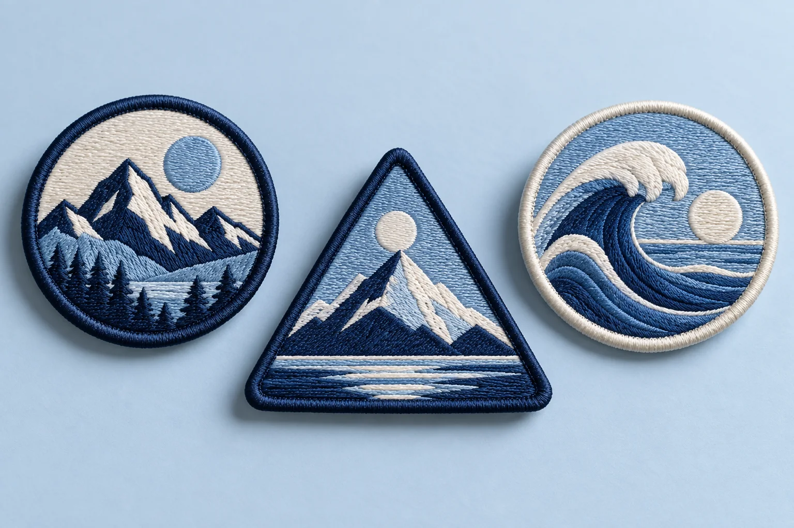
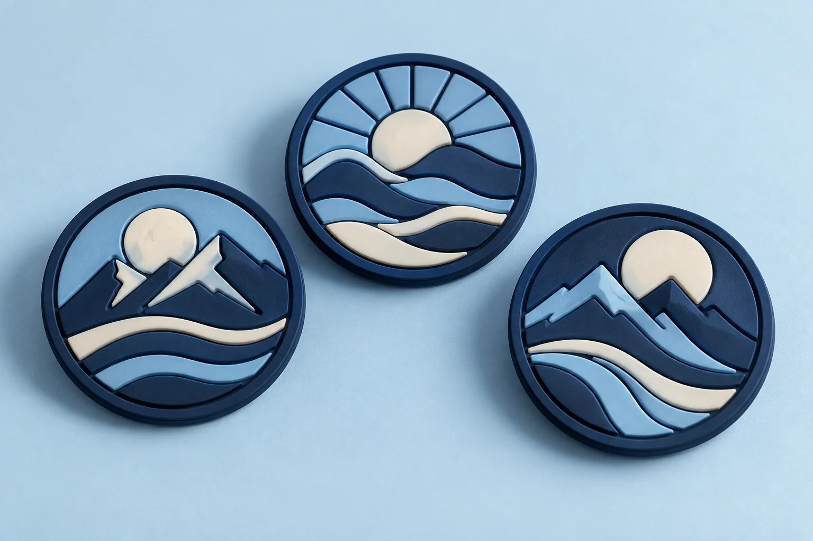
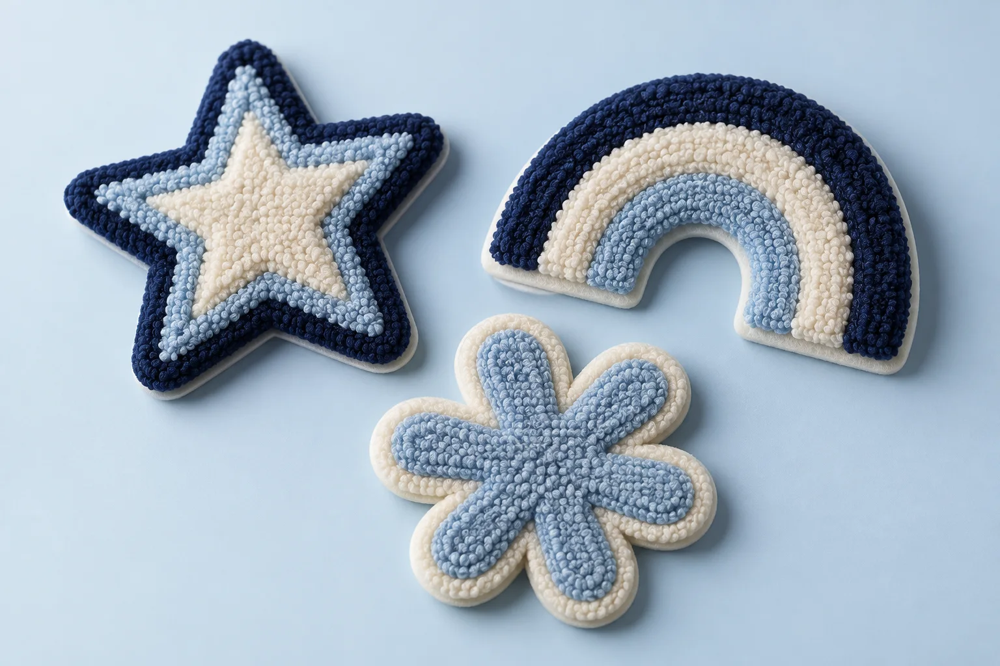
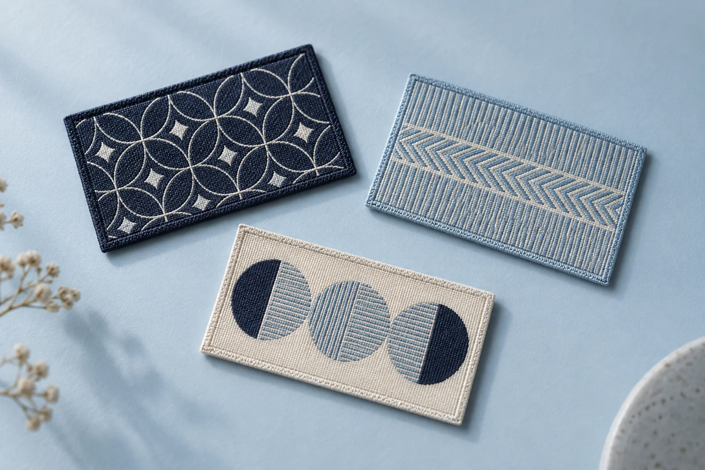
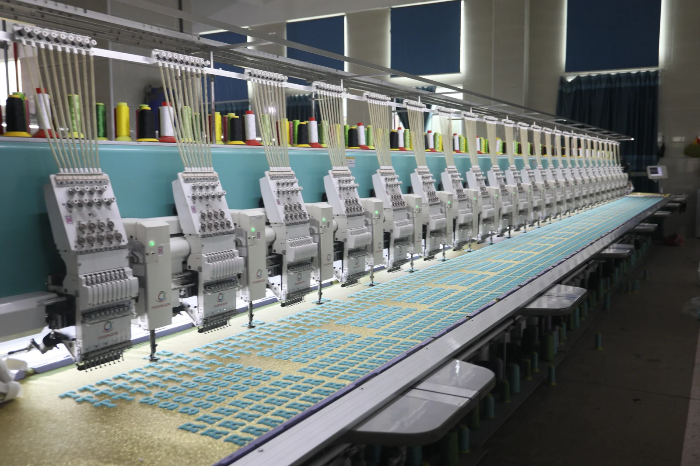

CUSTOMIZATION / MADE FOR YOUR BRAND
Your idea.
A product they’ll keep.
Start with clothing, socks, headwear or patches. Bring your artwork, choose a finish and shape the details around your brand.
Start a custom project →Find your base product →
01 / CHOOSE THE EXPRESSION
A different finish.
A different feel.
A small stitched emblem and a bold printed graphic tell different stories. Start with the look you want; we’ll discuss the technique with your fabric and artwork in mind.

TEXTURE & DIMENSION
Embroidery
Give a simple garment a tactile signature. Visible thread adds depth to compact logos, emblems and clean graphic shapes.
- Consider it for
- Chest emblems, cap fronts and teamwear branding.
- Bring to the brief
- Logo artwork, thread color references, placement and finished dimensions.
- Check in the sample
- Small details, stitch coverage and how the fabric sits around the design.
Discuss an embroidered design →
COLOR & IMPACT
Print
Let larger artwork lead. From a subtle chest graphic to a full back design, print gives illustrations and bold shapes room to breathe.
- Consider it for
- Graphic tees, event merchandise and collection artwork.
- Bring to the brief
- High-quality artwork, color references, print dimensions and fabric preference.
- Check in the sample
- Color appearance, surface feel and agreed care or durability requirements.
Discuss a printed design →02 / MAKE YOUR MARK
Four ways to build an emblem.
Choose the surface first, then discuss shape, size, edge finish and attachment. The examples below show the character of each technique.

Embroidered patches
Raised thread. A classic emblem.
Visible stitching brings texture to bold logos and badge designs.
- Explore for
- Workwear, caps and club emblems.
- Confirm
- Thread detail and edge finish.
Explore embroidered patches ↗
PVC patches
Sculpted shape. Defined layers.
Molded surfaces create recessed and raised areas with a smooth, dimensional look.
- Explore for
- Accessories and outdoor-inspired branding.
- Confirm
- Relief depth, color and attachment.
Explore pvc patches ↗
Chenille patches
Soft texture. Bold character.
Plush yarn and a felt base give larger shapes a distinctive varsity feel.
- Explore for
- Statement jackets and collegiate-style pieces.
- Confirm
- Pile texture, felt border and shape.
Explore chenille patches ↗
Woven patches
Fine detail. A flatter finish.
Closely woven threads suit compact designs and finer linework.
- Explore for
- Small emblems and detailed brand marks.
- Confirm
- Legibility, edge treatment and backing.
Explore woven patches ↗Attachment can change the product’s use and care. Discuss sew-on or other backing options with your selected patch.

03 / BUILD IT TOGETHER
From first sketch
to a shared plan.
Share the idea
Tell us the product, quantity, artwork, destination and target arrival date.
Shape the specification
Review fabric, decoration, sizing, labels and packing alongside the quotation.
Review the sample
Agree the proof or physical sample, revision scope and approval reference.
Confirm the project
Approve specifications, schedule and commercial terms before production begins.
Production & QC
Follow the approved specification and agreed inspection plan.
Shipping
Confirm packing, dispatch documents and transport arrangements.
04 / THE DETAILS MATTER
Approve the details.
Keep the reference.
A sample review turns an idea into something specific. Record your decisions so everyone is working toward the same result.
- Artwork scale, position and color references
- Fabric feel, measurements and size breakdown
- Decoration finish, backing and care requirements
- Labels, individual packaging and carton marks
Quality & project support →LET’S START WITH YOUR IDEA
You don’t need every answer yet.
A reference image, an approximate quantity and a short description are enough to start the conversation. Add artwork links and packaging requirements in your enquiry.
Request a custom quote →Questions before you start?Concept images illustrate possible finishes, not completed customer orders. Materials, minimum quantities, sampling and timing are confirmed per project.